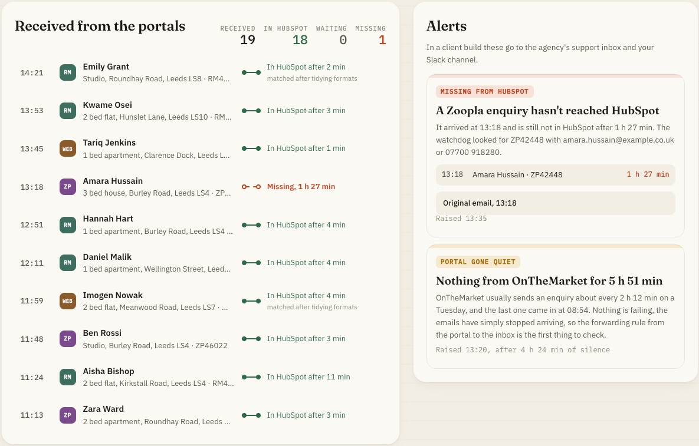

Find the portal enquiries that never reached your CRM
I build small systems for letting agents that check the enquiries from Rightmove, Zoopla, OnTheMarket and your website against your CRM, flag the ones that went missing, and send a first reply when the office is closed.
Where enquiries go missing
A portal changes the layout of its emails, and the parser that feeds your CRM stops recognising them. The emails keep arriving, nothing lands in the CRM, and nobody notices until a landlord asks why their flat has had no interest.
A forwarding rule breaks. Nothing errors; the portal simply goes quiet.
An applicant enquires at 8pm on a Friday. By Monday morning they've booked a viewing with the agent who replied first.
What I build
A watchdog for missing enquiries
Every few minutes (how often depends on what your CRM allows) it looks up each new enquiry in your CRM. Anything still missing after a set time, 15 minutes in the demo, becomes an alert with the original email attached, and a portal that goes quiet for much longer than usual is flagged too.

Each week you get one line per portal: enquiries received, and how many reached the CRM. It can't see enquiries that never reached your inbox at all, such as a phone call nobody logged.
A first reply when the office is closed
When the office is closed, the applicant gets a reply within minutes asking the questions you choose, for example move-in date, budget, pets and when they could view. Every draft is checked on the server against your rules before it goes out, such as never confirming a viewing, a price or availability, never discussing deposits, and passing complaints and landlord messages straight to a person. If a draft breaks a rule, it gets one rewrite; if that fails too, nothing is sent and the enquiry goes to your team with a note. There's a demo of the reply side here.
How we'd start
- You tell me your setup. Reply with the portals you list on and the CRM you use, and I'll send a one-page plan for your agency: what I'd check, what I'd need, and what it would cost. It's free, and I don't need any access for it.
- A one-week check, if the plan makes sense. Also free. You give me read-only access to the inbox your portal emails land in and a CRM export for the same week, under a short data agreement, and I send back how many enquiries each portal sent, how many reached the CRM, how long the first reply took, and anything that went missing.
- The build. A fixed price agreed before I start, usually between £1,500 and £3,500, and usually two to three weeks of work on the accounts and CRM you already use.
- A monthly care plan. I keep an eye on it, fix it when a portal changes its emails, make small changes, and send a one-page report each month. It's £250 to £500 a month, and you can cancel with a month's notice.
Your data
Where possible the software runs in your own accounts, and where it can't, on a small server set up in your agency's name that you can switch off. I work with the least access the job needs, you can revoke it at any time, and when the check ends I remove my access, delete anything I exported, and confirm it in writing. I sign a data processing agreement before I touch anything.
Nothing replies on your behalf until you've approved how it speaks, and it can run in draft-only mode for as long as you like.
Who you'd be working with

I'm Olaoluwa Abiodun, an engineer based in Lagos, Nigeria, working UK hours (Lagos is an hour ahead of London in winter and level with it in summer). I built Rentyx, a property-management platform, end to end, including an assistant that answered tenants' and landlords' WhatsApp messages under rules the server checked before anything went out, handing anything unclear to me.
You'd be one of my first agency clients, which is why the plan and the check are free and the build price is fixed.
Questions
Which CRMs does it work with?
I haven't worked with every lettings CRM, so I check what yours allows (an API, an email-in address or exports) before I quote.
What if a reply goes wrong?
It only sends replies that pass your rules, and anything they don't cover goes to a person. You can start in draft-only mode, where your team approves every reply.
Why are you in Lagos?
That's where I live. The work is all online, and my day overlaps yours.
If it sounds useful, email me at mate.olaoluwa@gmail.com with your agency's name, the portals you list on and the CRM you use, and I'll send the one-page plan within two working days.
Olaoluwa